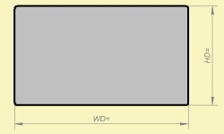
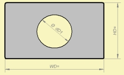

| Identifier | WD= HD= | |
| Units | m | |
| Format | Floating point number | |
| Purpose | Width and Height of diaphragm or cross-section. | |
| Used in | Def_Driver, Def_TwoCoilsDriver, Def_PiezoDriver, Coupler, Diaphragm, Duct, Enclosure (vented) | |
| See also | dD=, SD=, dD1=, SD1= | |
| Lumped Element Diaphragms | ||
 |
|
 |
|
WD= and HD= are the width and height of a rectangular or elliptical membrane or duct cross-section.
For example a driver with rectangular membrane
Def_Driver "Drv1"
WD=100mm HD=50mm
Mms=25g
....
For example a duct with elliptical cross-section:
Duct "D1"
Node=10=20
WD=100mm HD=50mm Ellipse
Len=100mm
Note, that membranes typically are supported and have a gradient of motion towards the suspension, which may yield the effective area of the membrane to be smaller than it appears geometrically.